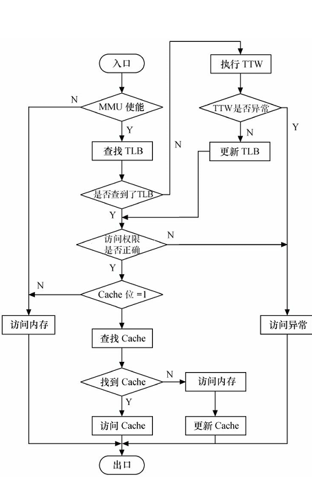
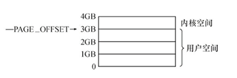
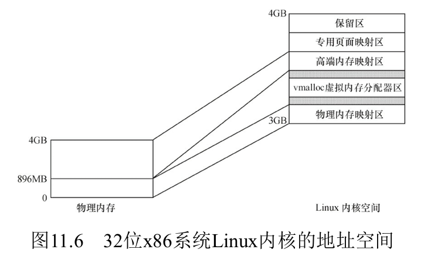
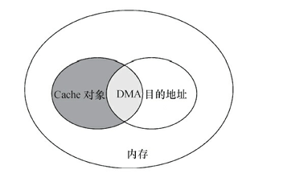

12 内存与IO空间的访问
内存与IO空间的访问
内存和IO的硬件机制
内存空间和IO空间
IO空间：x86架构CPU中的一个概念，代表了外设寄存器地址空间，通过特定指令访问
内存空间：大多数嵌入式CPU并没有IO空间，仅存在内存空间。可以直接通过地址、指针访问
内存管理单元
内存管理单元（MMU）是CPU的非常重要的一个组件，用于辅助OS进行内存管理，它的功能如下：
- 提供虚拟地址到物理地址的映射
- 内存访问权限保护
- 缓存控制：通过PTE的某些字段来控制缓存的行为，比如是否允许缓存、缓存写回策略…
转换旁路缓存
转换旁路缓存（Translation Lookaside Buffer，TLB）是MMU的核心部件，它缓存少量的虚拟地址与物理地址的转换关系，是转换表的Cache，因此也经常被称为“快表”
转换表漫游
转换表漫游（Translation Table walk，TTW）：当TLB中没有缓冲对应的地址转换关系时，需要通过对内存中页表进行遍历来获得对应关系
内存访问的完整流程
- 注意：最后是CPU进行的内存访问，MMU只负责查找映射关系，并且CPU会优先访问Cache，之后才访问物理内存
Linux的内存布局
在Linux系统中，每个进程的虚拟内存空间被分为2部分：用户空间和内核空间

- 对于一个进程，其用户空间和内核空间共用一个页表。但是CPU在用户态时只能访问用户空间范围的虚拟地址，不能直接访问内核空间（通过MMU结合PTE对应字段实现），而内核态可以访问任意空间的内存
- 不同进程的虚拟内存空间的内核空间所映射的物理地址是相同的，故内核在物理内存中只需要加载1次。其布局在系统启动时初始化，并在整个系统运行期间保持不变
- 对于内核线程，它只有内核态，所以它没有用户空间，体现在用户空间地址范围没有PTE
内核空间的布局
32位Linux在x86架构的内核地址空间通常被划分为以下几个区域：
- 1.直接映射区：将物理内存顺序映射到内核空间，是内核访问物理内存的主要方式
- 物理地址和虚拟地址之间存在线性关系
- 该区域可进一步分为2个区：
- DMA区域
- 常规区域
- 2.虚拟内存动态分配区
- 为内核提供动态分配的虚拟内存，用于分配不连续的物理内存
- 通过
vmalloc()分配的内存位于此区域
- 3.高端内存映射区：32位的Linux的内核空间只有1GB，其物理内存映射区最大长度为896MB，当物理内存大于896MB时，超过物理内存映射区的那部分内存称为高端内存，需要把他们映射到该区
- 4.专用页面映射区
- 5.系统保留映射区
用户空间的布局
1 | 高地址 |
注意，上面的BSS段、Text段并不是ELF里的节区（.bss、.text之类的），而是Segment，是若干节区的合并
Linux的内存管理
用户空间动态申请内存
用户空间动态申请内存用的函数是 malloc()。该函数由==C库==提供，并不是系统调用，其内部其实封装了系统调用，根据申请的内存大小而使用brk()或者mmap()系统调用
这个函数在各种操作系统上的使用是一致的，对应的用户空间内存释放函数是 free()。注意：动态申请的内存使用完后必须要释放，否则会造成内存泄漏，如果内存泄漏发生在内核空间，则会造成 ==系统崩溃==
内核空间动态申请内存
在Linux内核空间中申请内存涉及的函数主要包括kmalloc、__get_free_pages和vmalloc等
kmalloc
1 | void *kmalloc(size_t size, gfp_t flags)； |
kmalloc()申请的内存位于物理内存映射区域，因为存在较简单的转换关系，所以对申请的内存大小有限制，不能超过128KB
size：申请的大小flags：分配内存的方法，列举几个常用的GFP_KERNEL： 在内核空间申请内存，如果不能分配，将阻塞进程，故不能在中断等非进程上下文使用GFP_USER：在用户空间申请内存，可能阻塞GFP_DMA： 从直接映射区的DMA区域分配内存GFP_ATOMIC：分配内存的过程是一个原子过程，分配内存的过程不会被（高优先级进程或中断）打断
参考用法：
|– 进程上下文，可以睡眠 GFP_KERNEL
|– 进程上下文，不可以睡眠 GFP_ATOMIC
| |– 中断处理程序 GFP_ATOMIC
| |– 软中断 GFP_ATOMIC
| |– Tasklet GFP_ATOMIC
|– 用于DMA的内存，可以睡眠 GFP_DMA | GFP_KERNEL
|– 用于DMA的内存，不可以睡眠 GFP_DMA |GFP_ATOMIC
底层原理：
- 小内存（通常 ≤ 8KB）：从 SLAB 分配器的 通用对象缓存 中分配
- 大内存（> 8KB）：直接调用伙伴算法（
alloc_pages()），绕过 SLAB
对应的内存释放函数为：
1 | void kfree(const void *objp); |
kzalloc
1 | static inline void *kzalloc(size_t size, gfp_t flags){ |
kzalloc()函数与kmalloc()非常相似，参数及返回值是一样的，可以说是前者是后者的一个变种，因为kzalloc()实际上只是额外附加了 __GFP_ZERO 标志。所以它除了申请内核内存外，还会对申请到的内存内容清零kzalloc()对应的内存释放函数也是kfree()
__get_free_pages
__get_free_pages()系列函数/宏本质上是Linux内核最底层用于获取空闲内存的方法。kalloc()其实就是用了该函数。
因为底层依赖的的伙伴算法以2n页为单位管理空闲内存，所以
__get_free_pages的内存申请总是以2^n页为单位的__get_free_pages底层又利用了alloc_pages来创建页（page（页）是内存管理的基本单位，它既代表了一块内存，分为物理页和虚拟页）
vmalloc
1 | void *vmalloc(unsigned long size); |
vmalloc() 函数会在虚拟内存空间给出一块连续的内存区，但这片连续的虚拟内存在物理内存中并不一定连续
- 由于
vmalloc()没有保证申请到的是连续的物理内存，因此对申请的内存大小没有限制，如果需要申请较大的内存空间就需要用此函数了 vmalloc()的开销远大于__get_free_pages()，且伴随新的PTE被创建
对应的内存释放函数为：
1 | void vfree(const void *addr); |
- 注意：
vmalloc()和vfree()可能阻塞，因此不能从中断上下文调用
伙伴算法
伙伴算法（Buddy System）是 Linux 内核中用于管理物理内存页（Page）的分配与回收的核心算法，属于管理外部碎片的一种策略。它的核心思想是：
- 将空闲内存划分为不同大小的块（2^n 页），并通过 “伙伴合并” 机制减少内存碎片
- 主要用于页级内存分配（如
alloc_pages()），是kmalloc、vmalloc等底层依赖的基础
核心机制：
（1）内存块的分组
- 将内存页划分为不同order的块，每个块包含2^order个连续物理页
- 内核维护11个(0~10order)的空闲链表
free_area，每个链表存储对应大小的空闲块
（2）内存页的分配过程
1.请求分配：
- 若申请k个page，由2^n>=k计算出需要块的order：n
2.查找空闲块：
- 从
free_area[n]链表中查找空闲块：- 如果找到，直接分配
- 如果未找到，向更高阶(n+1)链表拆分：
- 将一块
2^(n+1)的块拆分为两个2^n的“伙伴块” - 一块用于分配，另一块加入
free_area[n]链表
- 将一块
（3）释放与合并
- 将释放的块放回对应的
free_area链表 - 若该块的“伙伴块”也是空闲的，则合并为更大的块（
2^(n+1)），并递归向上合并
（4）“伙伴”的定义
- 大小相同（同为
2^k页） - 物理地址连续
- 起始地址必须能被
2^(n+1)整除（即对齐）
slab算法
SLAB 是 Linux 内核中用于高效管理小内存对象（通常小于 1 页）的内存分配器，底层基于伙伴算法，它的核心目标是：
- 减少内存碎片：通过对象缓存机制避免频繁分配/释放小内存导致的内部碎片
- 提升性能：重用已初始化的对象，减少内存初始化和销毁的开销
核心机制：
SLAB 的三种状态
| 状态 | 描述 |
|---|---|
| Full | SLAB 中所有对象已被分配，无空闲空间 |
| Partial | SLAB 中部分对象空闲，部分已分配 |
| Empty | SLAB 中所有对象均未分配（可释放回伙伴系统） |
分层结构
1 | +---------------------+ |
SLAB 的工作流程：
（1）对象缓存
- 内核初始化时，为每种常用对象（如
task_struct、inode、kmalloc-16）建立专用缓存struct kmem_cache，避免频繁从伙伴系统申请内存
1 | struct kmem_cache *task_cachep; |
- 每个
kmem_cache管理一组SLAB，每个 SLAB又被划分为多个相同大小的对象
（2）分配对象
1 | struct task_struct *task = kmem_cache_alloc(task_cachep, GFP_KERNEL); |
- 从对应缓存中查找 Partial 或 Empty SLAB
- 若找到空闲对象：直接标记为已分配并返回
- 若无空闲 SLAB：从伙伴系统申请新内存页，创建新 SLAB
（3）释放对象
1 | kmem_cache_free(task_cachep, task); |
- 将对象标记为空闲，并检查其所属 SLAB 状态：
- 若 SLAB 从 Full → Partial：加入缓存的 Partial 链表
- 若 SLAB 从 Partial → Empty：加入 Empty 链表（可能被释放回伙伴系统）
（3）销毁缓存
当缓存不再需要时（如模块卸载），释放所有 SLAB 到伙伴系统
IO端口和IO内存的访问
- IO端口：设备的寄存器位于IO空间时，被称为IO端口
- IO内存：设备的寄存器位于内存空间时，被称为IO内存
由于IO端口和IO内存都是寄存器，所以对其不能随便访问，需要特定的操作
IO端口的访问
Linux内核提供了一些API来进行IO端口的访问：
- 看Linux设备驱动开发的11.4
IO内存的访问
由于这些寄存器位于内存空间，对他们的访问实际上就是对某些物理内存的访问。但是Linux中对于物理内存的访问都要经过MMU，所以我们需要在页表中建立新的PTE，实现将这些寄存器的物理地址映射到虚拟地址空间。Linux内核中具体的API如下：
1 | // 建立映射（返回一个虚拟地址） |
- 在完成映射后，尽管可以直接通过指针访问这些地址，但是Linux内核推荐用一组标准的API来完成设备内存映射的虚拟地址的读写，具体看书
将设备内存映射到用户空间
通过ioremap我们可以获得将寄存器的物理地址转换成虚拟地址，从而在内核态访问，但是在用户态还是没办法直接访问这些设备的寄存器，此时我们需要用到mmap，来把寄存器的虚拟地址映射到用户空间，当用户访问用户空间的这段地址范围时，实际上会转化 为对设备的访问
为啥要在用户空间访问设备寄存器？
- 一般用在帧缓冲设备上，这样就可以直接在应用层操作显存而避免数据的拷贝
DMA
DMA是一种无须CPU的参与就可以让外设与系统内存之间进行双向数据传输的硬件机制。使用DMA 可以使系统CPU从实际的I/O数据传输过程中摆脱出来，从而大大提高系统的吞吐率
DMA方式的数据传输由DMA控制器（DMAC）控制，在传输期间，CPU可以并发地执行其他任务。 当DMA结束后，DMAC通过中断通知CPU数据传输已经结束，然后由CPU执行相应的中断服务程序进行 后处理。
DMA与Cache一致性
Cache一致性的定义：同常指的是Cache和内存的一致性，有的时候物理内存被改变了，但是Cache没有同步，但是CPU一般优先访问Cache再访问物理内存，这就发生了Cache和内存的不一致问题
在使用DMA时，可能会造成Cache一致性问题，这个问题出现在DMA的目的地址与Cache所缓存的内存地址访问有重叠的情况
DMA编程
DMA是一种外设与内存交互数据的方式，内存中用于与外设交互数据的一块区域称为DMA缓冲区，它在物理内存中必须连续